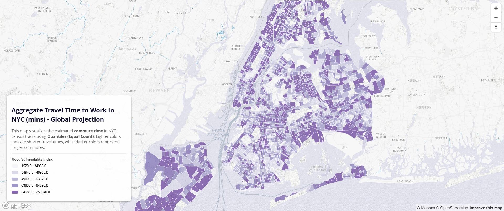

Exploring Urban Data through Web Mapping
This project visualizes urban commuting patterns using different spatial data classification methods and projections. Each map employs a unique technique to analyze aggregate travel time to work in New York City.
All data processing and analysis were conducted in my Colab notebook .

Quantiles with Global Map